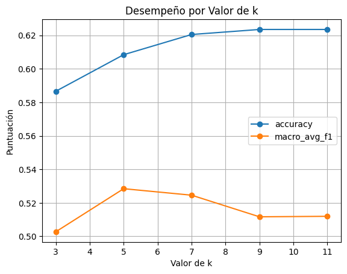
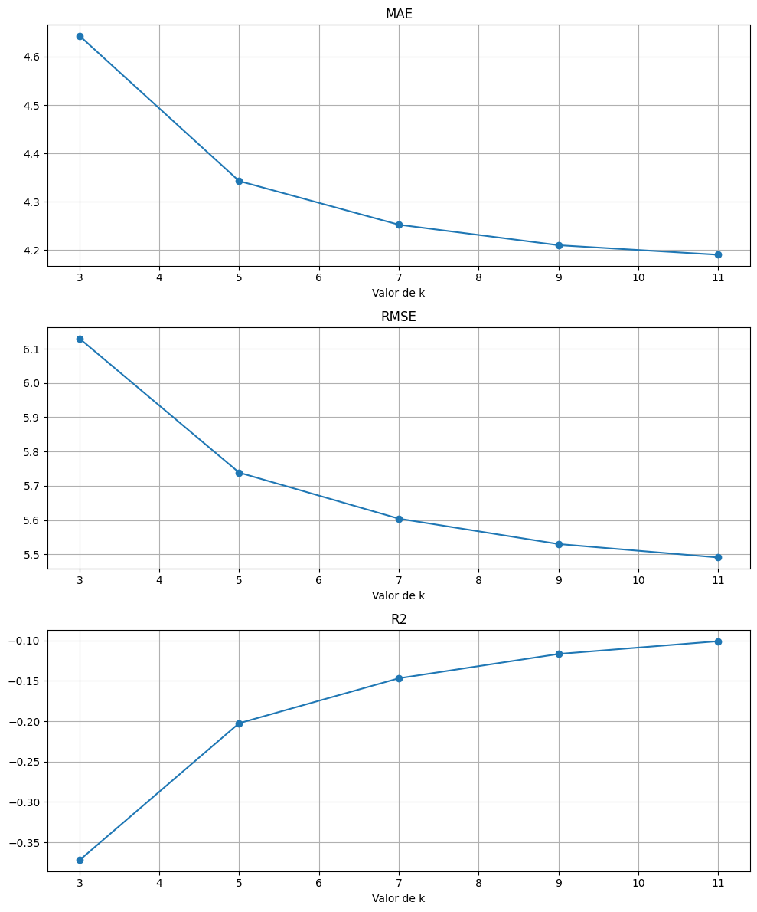

Carga y Exploración de Datos#
Objetivo#
Comprender la estructura, distribución y relaciones en el dataset mediante:
Análisis estadístico descriptivo
Visualización de distribuciones
Identificación de patrones iniciales
Dataset#
El conjunto de datos proviene del UCI Machine Learning Repository y contiene información sobre:
Características demográficas
Historial académico previo
Desempeño durante el semestre
Resultados finales (abandono y calificaciones)
Librerías#
# Importación de librerías (celda de código)
import pandas as pd
import numpy as np
import matplotlib.pyplot as plt
import seaborn as sns
from sklearn.model_selection import train_test_split
from sklearn.preprocessing import MinMaxScaler, OneHotEncoder
from sklearn.compose import ColumnTransformer
from sklearn.pipeline import Pipeline
from sklearn.neighbors import KNeighborsClassifier, KNeighborsRegressor
from sklearn.metrics import (accuracy_score, precision_score, recall_score, f1_score,
roc_auc_score, confusion_matrix, classification_report,
mean_absolute_error, mean_squared_error, r2_score)
from sklearn.metrics import roc_curve, auc
Importación de los datos#
from ucimlrepo import fetch_ucirepo
# fetch dataset
predict_students_dropout_and_academic_success = fetch_ucirepo(id=697)
# data (as pandas dataframes)
X = predict_students_dropout_and_academic_success.data.features
y = predict_students_dropout_and_academic_success.data.targets
# metadata
print(predict_students_dropout_and_academic_success.metadata)
# variable information
print(predict_students_dropout_and_academic_success.variables)
{'uci_id': 697, 'name': "Predict Students' Dropout and Academic Success", 'repository_url': 'https://archive.ics.uci.edu/dataset/697/predict+students+dropout+and+academic+success', 'data_url': 'https://archive.ics.uci.edu/static/public/697/data.csv', 'abstract': "A dataset created from a higher education institution (acquired from several disjoint databases) related to students enrolled in different undergraduate degrees, such as agronomy, design, education, nursing, journalism, management, social service, and technologies.\nThe dataset includes information known at the time of student enrollment (academic path, demographics, and social-economic factors) and the students' academic performance at the end of the first and second semesters. \nThe data is used to build classification models to predict students' dropout and academic sucess. The problem is formulated as a three category classification task, in which there is a strong imbalance towards one of the classes.", 'area': 'Social Science', 'tasks': ['Classification'], 'characteristics': ['Tabular'], 'num_instances': 4424, 'num_features': 36, 'feature_types': ['Real', 'Categorical', 'Integer'], 'demographics': ['Marital Status', 'Education Level', 'Nationality', 'Occupation', 'Gender', 'Age'], 'target_col': ['Target'], 'index_col': None, 'has_missing_values': 'no', 'missing_values_symbol': None, 'year_of_dataset_creation': 2021, 'last_updated': 'Mon Feb 26 2024', 'dataset_doi': '10.24432/C5MC89', 'creators': ['Valentim Realinho', 'Mónica Vieira Martins', 'Jorge Machado', 'Luís Baptista'], 'intro_paper': {'ID': 99, 'type': 'NATIVE', 'title': "Early prediction of student's performance in higher education: a case study", 'authors': 'Mónica V. Martins, Daniel Tolledo, Jorge Machado, Luís M. T. Baptista, and Valentim Realinho', 'venue': 'Trends and Applications in Information Systems and Technologies', 'year': 2021, 'journal': 'Advances in Intelligent Systems and Computing series', 'DOI': 'http://www.doi.org/10.1007/978-3-030-72657-7_16', 'URL': 'http://www.worldcist.org/2021/', 'sha': None, 'corpus': None, 'arxiv': None, 'mag': None, 'acl': None, 'pmid': None, 'pmcid': None}, 'additional_info': {'summary': None, 'purpose': 'The dataset was created in a project that aims to contribute to the reduction of academic dropout and failure in higher education, by using machine learning techniques to identify students at risk at an early stage of their academic path, so that strategies to support them can be put into place. \n\nThe dataset includes information known at the time of student enrollment – academic path, demographics, and social-economic factors. \n\nThe problem is formulated as a three category classification task (dropout, enrolled, and graduate) at the end of the normal duration of the course. \n', 'funded_by': 'This dataset is supported by program SATDAP - Capacitação da Administração Pública under grant POCI-05-5762-FSE-000191, Portugal.', 'instances_represent': 'Each instance is a student', 'recommended_data_splits': 'The dataset was used, in our project, with a data split of 80% for training and 20% for test.', 'sensitive_data': None, 'preprocessing_description': 'We performed a rigorous data preprocessing to handle data from anomalies, unexplainable outliers, and missing values.', 'variable_info': None, 'citation': 'If you use this dataset in experiments for a scientific publication, please kindly cite our paper: \nM.V.Martins, D. Tolledo, J. Machado, L. M.T. Baptista, V.Realinho. (2021) "Early prediction of student’s performance in higher education: a case study" Trends and Applications in Information Systems and Technologies, vol.1, in Advances in Intelligent Systems and Computing series. Springer. DOI: 10.1007/978-3-030-72657-7_16'}}
name role type \
0 Marital Status Feature Integer
1 Application mode Feature Integer
2 Application order Feature Integer
3 Course Feature Integer
4 Daytime/evening attendance Feature Integer
5 Previous qualification Feature Integer
6 Previous qualification (grade) Feature Continuous
7 Nacionality Feature Integer
8 Mother's qualification Feature Integer
9 Father's qualification Feature Integer
10 Mother's occupation Feature Integer
11 Father's occupation Feature Integer
12 Admission grade Feature Continuous
13 Displaced Feature Integer
14 Educational special needs Feature Integer
15 Debtor Feature Integer
16 Tuition fees up to date Feature Integer
17 Gender Feature Integer
18 Scholarship holder Feature Integer
19 Age at enrollment Feature Integer
20 International Feature Integer
21 Curricular units 1st sem (credited) Feature Integer
22 Curricular units 1st sem (enrolled) Feature Integer
23 Curricular units 1st sem (evaluations) Feature Integer
24 Curricular units 1st sem (approved) Feature Integer
25 Curricular units 1st sem (grade) Feature Integer
26 Curricular units 1st sem (without evaluations) Feature Integer
27 Curricular units 2nd sem (credited) Feature Integer
28 Curricular units 2nd sem (enrolled) Feature Integer
29 Curricular units 2nd sem (evaluations) Feature Integer
30 Curricular units 2nd sem (approved) Feature Integer
31 Curricular units 2nd sem (grade) Feature Integer
32 Curricular units 2nd sem (without evaluations) Feature Integer
33 Unemployment rate Feature Continuous
34 Inflation rate Feature Continuous
35 GDP Feature Continuous
36 Target Target Categorical
demographic description units \
0 Marital Status 1 – single 2 – married 3 – widower 4 – divorce... None
1 None 1 - 1st phase - general contingent 2 - Ordinan... None
2 None Application order (between 0 - first choice; a... None
3 None 33 - Biofuel Production Technologies 171 - Ani... None
4 None 1 – daytime 0 - evening None
5 Education Level 1 - Secondary education 2 - Higher education -... None
6 None Grade of previous qualification (between 0 and... None
7 Nationality 1 - Portuguese; 2 - German; 6 - Spanish; 11 - ... None
8 Education Level 1 - Secondary Education - 12th Year of Schooli... None
9 Education Level 1 - Secondary Education - 12th Year of Schooli... None
10 Occupation 0 - Student 1 - Representatives of the Legisla... None
11 Occupation 0 - Student 1 - Representatives of the Legisla... None
12 None Admission grade (between 0 and 200) None
13 None 1 – yes 0 – no None
14 None 1 – yes 0 – no None
15 None 1 – yes 0 – no None
16 None 1 – yes 0 – no None
17 Gender 1 – male 0 – female None
18 None 1 – yes 0 – no None
19 Age Age of studend at enrollment None
20 None 1 – yes 0 – no None
21 None Number of curricular units credited in the 1st... None
22 None Number of curricular units enrolled in the 1st... None
23 None Number of evaluations to curricular units in t... None
24 None Number of curricular units approved in the 1st... None
25 None Grade average in the 1st semester (between 0 a... None
26 None Number of curricular units without evalutions ... None
27 None Number of curricular units credited in the 2nd... None
28 None Number of curricular units enrolled in the 2nd... None
29 None Number of evaluations to curricular units in t... None
30 None Number of curricular units approved in the 2nd... None
31 None Grade average in the 2nd semester (between 0 a... None
32 None Number of curricular units without evalutions ... None
33 None Unemployment rate (%) None
34 None Inflation rate (%) None
35 None GDP None
36 None Target. The problem is formulated as a three c... None
missing_values
0 no
1 no
2 no
3 no
4 no
5 no
6 no
7 no
8 no
9 no
10 no
11 no
12 no
13 no
14 no
15 no
16 no
17 no
18 no
19 no
20 no
21 no
22 no
23 no
24 no
25 no
26 no
27 no
28 no
29 no
30 no
31 no
32 no
33 no
34 no
35 no
36 no
Análisis Exploratorio de los datos (EDA)#
Análisis Inicial#
# Carga de datos
data = fetch_ucirepo(id=697)
df = pd.concat([data.data.features, data.data.targets], axis=1)
# 1.1. Análisis inicial
print("Información básica:")
print(f"- Dimensiones: {df.shape}")
print(f"- Variables: {len(df.columns)}")
print(f"- Valores faltantes: {df.isnull().sum().sum()}")
Información básica:
- Dimensiones: (4424, 37)
- Variables: 37
- Valores faltantes: 0
Distribución de Variable Objetivo (Clasificación)#
df['Average_grade'] = (df['Curricular units 1st sem (grade)'] + df['Curricular units 2nd sem (grade)']) / 2
print("Estadísticas del promedio académico:")
print(df['Average_grade'].describe())
df_clean = df.dropna(subset=['Average_grade', 'Target']).copy()
#Visualización
plt.figure(figsize=(15, 12))
plt.subplot(2, 2, 1)
sns.countplot(data=df, x='Target', order=df['Target'].value_counts().index)
plt.title('Distribución de Abandono Académico')
plt.xlabel('Estado del Estudiante')
plt.ylabel('Cantidad de Estudiantes')
Estadísticas del promedio académico:
count 4424.000000
mean 10.435514
std 4.818530
min 0.000000
25% 11.000000
50% 12.250000
75% 13.266667
max 18.283654
Name: Average_grade, dtype: float64
Text(0, 0.5, 'Cantidad de Estudiantes')
Distribución del promedio#
plt.subplot(2, 2, 2)
ax = sns.histplot(data=df_clean, x='Average_grade', bins=15, kde=True, color='skyblue')
plt.title('Distribución del Promedio Académico\n(Media: {:.2f})'.format(df_clean['Average_grade'].mean()))
plt.axvline(df_clean['Average_grade'].mean(), color='red', linestyle='--')
plt.text(df_clean['Average_grade'].mean()+0.1, ax.get_ylim()[1]*0.9, 'Media', color='red')
Text(10.535513648948914, 1204.875, 'Media')
Distribución por semestre#
plt.subplot(2, 2, 3)
sns.kdeplot(data=df, x='Curricular units 1st sem (grade)', label='1er Semestre', fill=True)
sns.kdeplot(data=df, x='Curricular units 2nd sem (grade)', label='2do Semestre', fill=True)
plt.title('Comparación de Distribución por Semestre')
plt.xlabel('Calificación')
plt.ylabel('Densidad')
plt.legend()
<matplotlib.legend.Legend at 0x293d12a52b0>
Boxplot#
plt.subplot(2, 2, 4)
sns.boxplot(data=df_clean, x='Target', y='Average_grade', palette='Set2',
order=sorted(df_clean['Target'].unique()))
plt.title('Distribución de Promedios por Estado')
plt.xlabel('Estado de Abandono')
plt.ylabel('Promedio Combinado')
plt.tight_layout()
plt.show()
C:\Users\Elian\AppData\Local\Temp\ipykernel_38956\4238463372.py:2: FutureWarning:
Passing `palette` without assigning `hue` is deprecated and will be removed in v0.14.0. Assign the `x` variable to `hue` and set `legend=False` for the same effect.
sns.boxplot(data=df_clean, x='Target', y='Average_grade', palette='Set2',
Clasificación de las variables y preprocesamiento#
Basado en la descripción del dataset, clasificaré las variables en categóricas y numéricas, y luego crearé un pipeline adecuado para el preprocesamiento.
Clasificación de variables#
from sklearn.preprocessing import OneHotEncoder, MinMaxScaler
from sklearn.compose import ColumnTransformer
from sklearn.pipeline import Pipeline
# Definición de columnas por tipo
categorical_features = [
'Marital Status', 'Application mode', 'Course',
'Daytime/evening attendance', 'Previous qualification',
'Nacionality', "Mother's qualification", "Father's qualification",
"Mother's occupation", "Father's occupation", 'Displaced',
'Educational special needs', 'Debtor', 'Tuition fees up to date',
'Gender', 'Scholarship holder', 'International'
]
numeric_features = [
'Application order', 'Previous qualification (grade)',
'Admission grade', 'Age at enrollment',
'Curricular units 1st sem (credited)',
'Curricular units 1st sem (enrolled)',
'Curricular units 1st sem (evaluations)',
'Curricular units 1st sem (approved)',
'Curricular units 1st sem (grade)',
'Curricular units 1st sem (without evaluations)',
'Curricular units 2nd sem (credited)',
'Curricular units 2nd sem (enrolled)',
'Curricular units 2nd sem (evaluations)',
'Curricular units 2nd sem (approved)',
'Curricular units 2nd sem (grade)',
'Curricular units 2nd sem (without evaluations)',
'Unemployment rate', 'Inflation rate', 'GDP'
]
# Transformers para cada tipo de variable
numeric_transformer = Pipeline(steps=[
('scaler', MinMaxScaler()) # Normalización MinMax para variables numéricas
])
categorical_transformer = Pipeline(steps=[
('onehot', OneHotEncoder(handle_unknown='ignore', sparse_output=False)) # OneHot para categóricas
])
# Combinar transformers en un ColumnTransformer
preprocessor = ColumnTransformer(
transformers=[
('num', numeric_transformer, numeric_features),
('cat', categorical_transformer, categorical_features)
],
remainder='drop' # Ignorar cualquier otra columna no especificada
)
# Pipeline completo (puedes añadir el estimador al final)
pipeline = Pipeline(steps=[
('preprocessor', preprocessor)
# ('classifier', ...) # Aquí iría tu modelo KNN u otro
])
Análisis estadístico por tipo de varibale#
Variables numéricas#
# Estadísticas descriptivas
print(df[numeric_features].describe())
# Visualización
plt.figure(figsize=(15, 10))
for i, col in enumerate(numeric_features[:6]): # Mostrar solo las primeras 6 para ejemplo
plt.subplot(2, 3, i+1)
sns.histplot(data=df, x=col, kde=True)
plt.title(f'Distribución de {col}')
plt.tight_layout()
plt.show()
Application order Previous qualification (grade) Admission grade \
count 4424.000000 4424.000000 4424.000000
mean 1.727848 132.613314 126.978119
std 1.313793 13.188332 14.482001
min 0.000000 95.000000 95.000000
25% 1.000000 125.000000 117.900000
50% 1.000000 133.100000 126.100000
75% 2.000000 140.000000 134.800000
max 9.000000 190.000000 190.000000
Age at enrollment Curricular units 1st sem (credited) \
count 4424.000000 4424.000000
mean 23.265145 0.709991
std 7.587816 2.360507
min 17.000000 0.000000
25% 19.000000 0.000000
50% 20.000000 0.000000
75% 25.000000 0.000000
max 70.000000 20.000000
Curricular units 1st sem (enrolled) \
count 4424.000000
mean 6.270570
std 2.480178
min 0.000000
25% 5.000000
50% 6.000000
75% 7.000000
max 26.000000
Curricular units 1st sem (evaluations) \
count 4424.000000
mean 8.299051
std 4.179106
min 0.000000
25% 6.000000
50% 8.000000
75% 10.000000
max 45.000000
Curricular units 1st sem (approved) Curricular units 1st sem (grade) \
count 4424.000000 4424.000000
mean 4.706600 10.640822
std 3.094238 4.843663
min 0.000000 0.000000
25% 3.000000 11.000000
50% 5.000000 12.285714
75% 6.000000 13.400000
max 26.000000 18.875000
Curricular units 1st sem (without evaluations) \
count 4424.000000
mean 0.137658
std 0.690880
min 0.000000
25% 0.000000
50% 0.000000
75% 0.000000
max 12.000000
Curricular units 2nd sem (credited) \
count 4424.000000
mean 0.541817
std 1.918546
min 0.000000
25% 0.000000
50% 0.000000
75% 0.000000
max 19.000000
Curricular units 2nd sem (enrolled) \
count 4424.000000
mean 6.232143
std 2.195951
min 0.000000
25% 5.000000
50% 6.000000
75% 7.000000
max 23.000000
Curricular units 2nd sem (evaluations) \
count 4424.000000
mean 8.063291
std 3.947951
min 0.000000
25% 6.000000
50% 8.000000
75% 10.000000
max 33.000000
Curricular units 2nd sem (approved) Curricular units 2nd sem (grade) \
count 4424.000000 4424.000000
mean 4.435805 10.230206
std 3.014764 5.210808
min 0.000000 0.000000
25% 2.000000 10.750000
50% 5.000000 12.200000
75% 6.000000 13.333333
max 20.000000 18.571429
Curricular units 2nd sem (without evaluations) Unemployment rate \
count 4424.000000 4424.000000
mean 0.150316 11.566139
std 0.753774 2.663850
min 0.000000 7.600000
25% 0.000000 9.400000
50% 0.000000 11.100000
75% 0.000000 13.900000
max 12.000000 16.200000
Inflation rate GDP
count 4424.000000 4424.000000
mean 1.228029 0.001969
std 1.382711 2.269935
min -0.800000 -4.060000
25% 0.300000 -1.700000
50% 1.400000 0.320000
75% 2.600000 1.790000
max 3.700000 3.510000
Variables categóricas#
# Frecuencias y visualización
plt.figure(figsize=(15, 15))
for i, col in enumerate(categorical_features[:6]): # Mostrar solo las primeras 6 para ejemplo
plt.subplot(3, 2, i+1)
sns.countplot(data=df, x=col)
plt.title(f'Distribución de {col}')
plt.xticks(rotation=45)
plt.tight_layout()
plt.show()

Implementación completa del modelo KNN#
División de los datos#
from sklearn.model_selection import train_test_split
# Definir variables (ajustar según tus nombres de columnas exactos)
X = df.drop('Target', axis=1) # Features
y_class = df['Target'] # Clasificación
y_reg = df['Curricular units 2nd sem (grade)'] # Regresión
# División para clasificación (70% train, 30% test)
X_train, X_test, y_class_train, y_class_test = train_test_split(
X, y_class, test_size=0.3, random_state=42, stratify=y_class)
# División para regresión (mismos splits para consistencia)
_, _, y_reg_train, y_reg_test = train_test_split(
X, y_reg, test_size=0.3, random_state=42)
print(f"Tamaño del conjunto de entrenamiento: {X_train.shape[0]} muestras")
print(f"Tamaño del conjunto de prueba: {X_test.shape[0]} muestras")
Tamaño del conjunto de entrenamiento: 3096 muestras
Tamaño del conjunto de prueba: 1328 muestras
KNN para clasificación#
Entrenamiento y Evaluación#
from sklearn.neighbors import KNeighborsClassifier
from sklearn.metrics import (confusion_matrix, classification_report,
roc_curve, auc, RocCurveDisplay)
# Crear y entrenar modelo (usando k=5 como ejemplo)
knn_class = KNeighborsClassifier(n_neighbors=5)
knn_class.fit(preprocessor.fit_transform(X_train), y_class_train)
# Predecir en test
y_pred = knn_class.predict(preprocessor.transform(X_test))
y_proba = knn_class.predict_proba(preprocessor.transform(X_test))
# Métricas
print("\nClassification Report:")
print(classification_report(y_class_test, y_pred))
# Matriz de Confusión
plt.figure(figsize=(8, 6))
cm = confusion_matrix(y_class_test, y_pred)
sns.heatmap(cm, annot=True, fmt='d', cmap='Blues',
xticklabels=knn_class.classes_, yticklabels=knn_class.classes_)
plt.title('Matriz de Confusión')
plt.xlabel('Predicho')
plt.ylabel('Real')
plt.show()
# Curva ROC (para clasificación multiclase)
plt.figure(figsize=(8, 6))
for i, class_label in enumerate(knn_class.classes_):
fpr, tpr, _ = roc_curve(y_class_test == class_label, y_proba[:, i])
roc_auc = auc(fpr, tpr)
plt.plot(fpr, tpr, label=f'{class_label} (AUC = {roc_auc:.2f})')
plt.plot([0, 1], [0, 1], 'k--')
plt.xlabel('False Positive Rate')
plt.ylabel('True Positive Rate')
plt.title('Curvas ROC por Clase')
plt.legend()
plt.show()
Classification Report:
precision recall f1-score support
Dropout 0.66 0.56 0.60 427
Enrolled 0.31 0.24 0.27 238
Graduate 0.66 0.77 0.71 663
accuracy 0.61 1328
macro avg 0.54 0.52 0.53 1328
weighted avg 0.60 0.61 0.60 1328
Evaluación con diferentes modelos de k#
k_values = [3, 5, 7, 9, 11]
results = {}
for k in k_values:
model = KNeighborsClassifier(n_neighbors=k)
model.fit(preprocessor.transform(X_train), y_class_train)
y_pred = model.predict(preprocessor.transform(X_test))
report = classification_report(y_class_test, y_pred, output_dict=True)
results[k] = {
'accuracy': report['accuracy'],
'macro_avg_f1': report['macro avg']['f1-score']
}
# Visualización
results_df = pd.DataFrame(results).T
results_df.plot(marker='o')
plt.title('Desempeño por Valor de k')
plt.xlabel('Valor de k')
plt.ylabel('Puntuación')
plt.grid(True)
plt.show()

KNN para Regresión#
Entrenamiento y evaluación#
from sklearn.neighbors import KNeighborsRegressor
from sklearn.metrics import mean_absolute_error, mean_squared_error, r2_score
# Crear y entrenar modelo (k=5 como ejemplo)
knn_reg = KNeighborsRegressor(n_neighbors=5)
knn_reg.fit(preprocessor.transform(X_train), y_reg_train)
# Predecir
y_pred_reg = knn_reg.predict(preprocessor.transform(X_test))
# Métricas
print("\nMétricas de Regresión:")
print(f"MAE: {mean_absolute_error(y_reg_test, y_pred_reg):.2f}")
print(f"RMSE: {np.sqrt(mean_squared_error(y_reg_test, y_pred_reg)):.2f}")
print(f"R²: {r2_score(y_reg_test, y_pred_reg):.2f}")
# Gráfico de predicciones vs reales
plt.figure(figsize=(8, 6))
plt.scatter(y_reg_test, y_pred_reg, alpha=0.5)
plt.plot([y_reg_test.min(), y_reg_test.max()],
[y_reg_test.min(), y_reg_test.max()], 'r--')
plt.xlabel('Valores Reales')
plt.ylabel('Predicciones')
plt.title('Predicciones vs Valores Reales')
plt.show()
# Gráfico de residuos
residuals = y_reg_test - y_pred_reg
plt.figure(figsize=(8, 6))
plt.scatter(y_pred_reg, residuals, alpha=0.5)
plt.axhline(y=0, color='r', linestyle='--')
plt.xlabel('Predicciones')
plt.ylabel('Residuos')
plt.title('Análisis de Residuos')
plt.show()
Métricas de Regresión:
MAE: 4.34
RMSE: 5.74
R²: -0.20
Evaluación con diferentes modelos de k#
reg_results = {}
for k in k_values:
model = KNeighborsRegressor(n_neighbors=k)
model.fit(preprocessor.transform(X_train), y_reg_train)
y_pred = model.predict(preprocessor.transform(X_test))
reg_results[k] = {
'MAE': mean_absolute_error(y_reg_test, y_pred),
'RMSE': np.sqrt(mean_squared_error(y_reg_test, y_pred)),
'R2': r2_score(y_reg_test, y_pred)
}
# Visualización
reg_results_df = pd.DataFrame(reg_results).T
fig, axes = plt.subplots(3, 1, figsize=(10, 12))
for i, metric in enumerate(['MAE', 'RMSE', 'R2']):
reg_results_df[metric].plot(ax=axes[i], marker='o')
axes[i].set_title(metric)
axes[i].set_xlabel('Valor de k')
axes[i].grid(True)
plt.tight_layout()
plt.show()

Documentación de resultados#
Para clasificación#
print("Resumen de Clasificación:")
print(f"Mejor k: {results_df['accuracy'].idxmax()} con accuracy {results_df['accuracy'].max():.3f}")
print("\nMatriz de Confusión óptima:")
best_k_class = results_df['accuracy'].idxmax()
best_model = KNeighborsClassifier(n_neighbors=best_k_class)
best_model.fit(preprocessor.transform(X_train), y_class_train)
y_pred_best = best_model.predict(preprocessor.transform(X_test))
print(confusion_matrix(y_class_test, y_pred_best))
Resumen de Clasificación:
Mejor k: 9 con accuracy 0.623
Matriz de Confusión óptima:
[[229 47 151]
[ 41 35 162]
[ 51 48 564]]
Para Regresión#
print("\nResumen de Regresión:")
print(f"Mejor k: {reg_results_df['R2'].idxmax()} con R² {reg_results_df['R2'].max():.3f}")
print(f"Menor RMSE: {reg_results_df['RMSE'].min():.3f} con k={reg_results_df['RMSE'].idxmin()}")
Resumen de Regresión:
Mejor k: 11 con R² -0.101
Menor RMSE: 5.491 con k=11